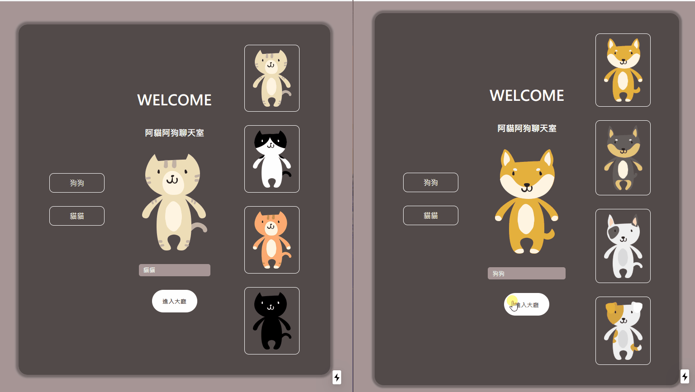

ChuBoy
web developer
data analyst
技能與專案
FRONTEND
FRONTEND
FRONTEND
專為電腦使用者設計「以清單為導向」的播放器，部屬在Firebase且擁有熱門排行統計的功能，使用者可以建立與分享自己的音樂清單

部屬在虛擬機的全端網頁作品(採用JessHsu的設計稿)，透過Web Socket，使用者可以即時地傳輸訊息與圖片
BACKEND
BACKEND
BACKEND
linebot
line APInodemongodbline開放開發者使用messaging api的服務，可以新增機器人的頻道，將channelId、channelSecret、channelAccessToken 透過安全應用層https以post的方式和後端伺服器安全地連結，同時後端node.js套件npm中有一個linebot套件包，結合免費的Heroku---提供免費後端平台的服務PaaS，就能客製化自動彙整班兵回報的機器人
https://github.com/billju/ninja-hattoriandroid
demos創客社的夥伴鼓吹大家多多參與競賽，在一次的ARM嵌入式系統開發競賽前，利用自上海交換學生回國的暑假期間，挑戰速學Android應用程式開發。
https://github.com/billju/Android-source-code-demotranscriber
rich text editorweb audiomediaSRT file IO逐字稿&字幕編輯軟體
工作上常常都需要撰寫會議記錄，需要一個工具能夠回播音檔同時能夠饌打文字，而且要有視覺化的音軌，因此自製了波峰取樣與文字編輯功能，不僅避開web audio的音樂解碼會佔據大量記憶體的問題，讓長達數小時的影音也能將波形視覺化，也能藉由格行標籤快速跳點。
everytime when transcribing from meeting is too trivial
Data Scientist
Gradient Desecent
with custom chart
Here I'll show you how a regression model is trained.
交通地圖
讀運系卻搞資訊，做過票證分析、旅行時間預測模型、浮車法調查APP、客運評鑑系統我希望整合交通資訊，讓規劃者有更好的依據，讓用路人有更好的選擇
traffic
network
city plan
environment
land owner
engineering
Path Finder
Route Optimization
A* Algorithm
Here I'll show you how to solve this maze.
more projects
visit site
Pomodoro
visit site
Tetris
visit site
Agar.io
visit site
Draggable Tetris
visit site
Freecell
visit site
Greenband
contact me